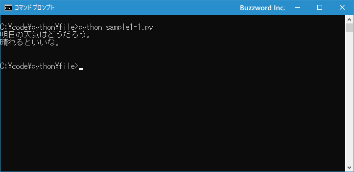

ファイルを開く/ファイルを閉じる
Python を使ってファイルからデータを読み込んだり、ファイルにデータを書き込むにはファイルを開く必要があります。また利用が終わったらファイルを閉じておきます。ここでは Python の組み込み関数である open 関数を使ってファイルを開く方法、およびファイルを閉じる方法について解説します。
ファイルを開く
Python でファイルを開くには組み込み関数の open 関数を使用します。 open 関数の書式は次の通りです。
open(file, mode='r', buffering=-1, encoding=None, errors=None, newline=None, closefd=True, opener=None)
引数が数多くありますが、 1 番目、 2 番目、 4 番目の引数について解説します。残りの引数は使用する時にあわせて解説します。
1 番目の引数の file には開くファイル名を指定します。開くことに成功すると対応するファイルオブジェクトを返します(どのようなファイルオブジェクトが返されるのかは 2 番目の引数で指定したモードによってことなります)。ファイルを開くことができなければ OSError が送出されます。
2 番目の引数の mode にはファイルを開くモードを指定します。次の値が指定できます。
r 読み込み用(ファイルが存在しない場合はエラー) r+ 読み込みおよび書き込み用(ファイルが存在しない場合はエラー) w 書き込み用(ファイルの中身をクリア) w+ 読み込みおよび書き込み用(ファイルの中身をクリア) a 書き込み用(ファイルの末尾に追加) a+ 読み込みおよび書き込み用(ファイルの末尾に追加) x 書き込み用(ファイルが存在している場合はエラー) x+ 読み込みおよび書き込み用(ファイルが存在している場合はエラー) b バイナリモード t テキストモード
モードはデフォルトでテキストモードですが、 'b' をつけて 'r+b' や 'wb' のようにすることでバイナリモードになります。(デフォルトはテキストモードなので 't' を明示的に付ける必要はありません)。
4 番目の引数の encoding で使用する文字エンコーディング名を指定します。テキストモードでのみ利用します。指定できるエンコーディング名の一部を次に記載します。
ascii cp932 euc_jp shift_jis utf-8 (utf_8)
エンコーディング名を省略した場合は現在のプラットフォームのデフォルトエンコーディングが使用されます。ご自身の環境でのデフォルトエンコーディングを調べるには次のように実行してみてください。
import locale
locale.getpreferredencoding()
>> 'cp932'
私の環境ではデフォルトエンコーディング名は cp932 でした。( cp932 というのは Shift_JIS を拡張したエンコードです)。もし UTF-8 を使って記述されたファイルを読み込みたい場合は encoding='UTF-8' のように引数に指定します。
具体的には次のように記述します。
f1 = open('myfile.txt', 'r')
f2 = open('myfile.txt', 'w+')
f3 = open('myfile.txt', 'r', encoding='UTF-8')
f4 = open('myfile.txt', 'rb')
ファイルオブジェクトのクラス
ファイルのオープンに成功すると、ファイルオブジェクトが返されます。ファイルオブジェクトのクラスが何になるのかは open 関数で使用したモードによって異なり次のようになります。
r io.TextIOWrapper r+ io.TextIOWrapper rb io.BufferedReader r+b io.BufferedRandom w io.TextIOWrapper w+ io.TextIOWrapper wb io.BufferedWriter w+b io.BufferedRandom a io.TextIOWrapper a+ io.TextIOWrapper ab io.BufferedWriter a+b io.BufferedRandom x io.TextIOWrapper x+ io.TextIOWrapper xb io.BufferedWriter x+b io.BufferedRandom
テキストモードの場合は io.TextIOWrapper 、バイナリモードの場合は読み込みは io.BufferedReader 、書き込みは io.BufferedWriter 、読み書きの場合は io.BufferedRandom になるようです。
ファイルを閉じる
ファイルの利用が終わりましたら close メソッドを使ってファイルオブジェクトを閉じます。( close メソッドはどのファイルオブジェクトのクラスでも定義されています)。
close()
具体的には次のように記述します。
f = open('myfile.txt', 'r')
...
...
f.close()
ほかの記述方法として with 文を使用するとファイルを開いたあと、利用が終わったら自動的にファイルを閉じることができます。
with open('myfile.txt', 'r') as f:
...
...
どちらの方法でも結果は同じになります。
それでは簡単なサンプルプログラムを作って試してみます。テキストエディタで次のように記述したあと、 sample1-1.py という名前で保存します。
f = open('myfile.txt', 'r')
data = f.read()
print(data)
f.close()
プログラムがある同じディレクトリに myfile.txt というファイルを作成し、次のようにテキストを入力しておきました。エンコーディングは私の環境のデフォルトエンコーディングである cp932 で保存しました。
明日の天気はどうだろう。 晴れるといいな。
その後で、次のように実行してください。
python sample1-1.py

ファイル myfile.txt を開き、ファイルの内容を読み込んだ上で画面に出力しています。そのあとでファイルオブジェクトを閉じています。
-- --
Python を使ってファイルを開く方法、およびファイルを閉じる方法について解説しました。
( Written by Tatsuo Ikura )

著者 / TATSUO IKURA
初心者～中級者の方を対象としたプログラミング方法や開発環境の構築の解説を行うサイトの運営を行っています。